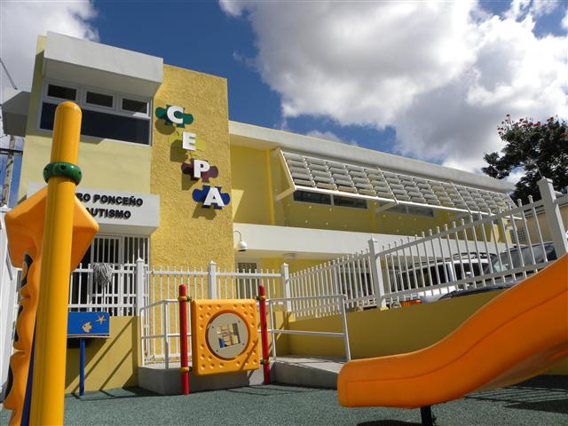
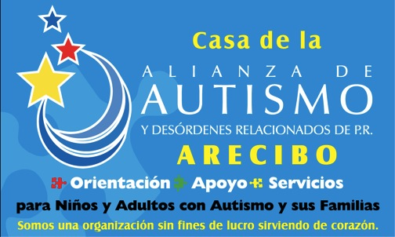
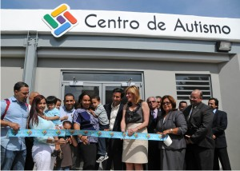

Centros de apoyo
Tratando el autismo desde afuera
- Intervención temprana.
- Como toda condición de salud, mientras más rápido se pueda tratar, mejores serán las probabilidades para vivir con la condición.
- Medicamentos.
- Aunque no existe una cura para el autismo, hay ciertos medicamentos que facilitan en el cuidado de un afectado.
- Terapias especializadas.
- Las terapias especializadas han demostrado proveer resultados favorecedores en el tratamiento de personas con autismo.
- Redes de apoyo.
- Las redes de apoyo pueden resultar ser provechosas tanto para los afectados, como para los cuidadores de los mismos.
- Cuidador complementario.
- Un cuidador complementario puede asistir con el desarrollo de destrezas de socialización y la vez provee un descanso del padre o cuidador primario.

Centro Ponceño de Autismo

Casa de la alianza de Autismo
